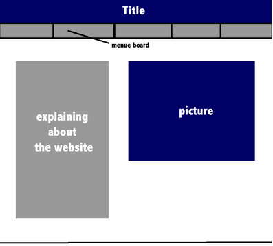

CTD WebSite Design: Planning Site by Ashley Wu
Pages
Brainstorm Ideas
- Human Rights Club
- used to have a website for projects that they did
- new site for agenda, planning (feedback/forum) and actual projects
- How to use an Ipad?
Why a site like this?
- My grandma doesn't know how to use her Ipad very well, so this website will answer her questions whenever she forgets.
- Art Share
Why a site like this?
- Instead of big websites like deviantart.com, this can let people to upload their artwors among their friends and share.
Decided Idea
Making a webpage for the PTA to help them solve previous problems that they might have experienced.
Before talking to the client:
Idea of how the page is laid out

After talking to the client:
Audience (Client's & Our Group's)
- Parents
- Volunteers
Objectives (Client's Request)
- for audience to be able to volunteer to help
- food donation
- set up
- clean up
- preparation
- multiple languages
Success Criteria (Our Group's)
- for client to be able to effectively have their audience to volunteer
- easy to access
- simple, not complicated (appearance)
- signup quickly and finish
- signup form is on site
- contact list is on site (for any questions and concerns)
- upcoming news are on site
How will this site look like?
.png)
Page Description:
Food Donation
- has spreadsheet for people to sign up
- has description of what this particular help is
- what is the requirement?
- what kinds of food we need?
- which booth? (the Korean, Chinese or Japanese booth)
- pictures
Set Up & Clean Up
- has spreadsheet
- description of help
- what times are available?
- where to set up?
Preparation
- has spreadsheet
- description of help
- which booth needs help?
- when, where and how?
Wireframing
1st Idea

Why this idea wasn't used
- the pictures are spamming the page
- doesn't look pleasant to the eye and it's very messy, so it's hard to focus on the most important information
2nd Idea

Why this idea wasn't used
- this wireframe didn't include the signup aspect
- this also didn't include contact list
- so if the audience encounters a problem, they might not know who to contact (doesn't solve problem of miscommunication)
3rd Idea

Why this idea wasn't used
- a picture slideshow doesn't help the audience to signup for volunteer
- a description of winter fair is also not necessary
- because the audience should already know what the winter fair is before coming to the site
4th Idea

This was the CHOSEN idea, but why?
- shows the main point and is easy to understand
- also if the audience has trouble, the description should be able to help, if not, there are a list of contacts
But there are still somethings that this layout can't do, like...
- doesn't have pictures to draw in interest
- maybe there is an easier way to signup rather than clicking on each individual link to signup
To-Do List
- for after creating the wireframe
- get approval from client
- move on an create storyboard
-
- chose colors, images, fonts to replace gray squares
- replace and resize
- save
- get approval (make changes if needed)
- make file with clickable links in Fireworks
Storyboard
Ideas for Themes
- AIS color scheme (blue, red, white)
- Winter theme, because it's WINTER Fair
Progress

Feedback/Questions to think about
- If "Sign Up!" is the call-to-action, why would the contact list be next to it? Doesn't it distract the audience?
- I want it there because it helps the audience to correspond the contact list with the volunteering list
- How would the call-to-action stand out?

This image above is the storyboard and how I sliced the page up to create my prototype
How did I create it?
- after I finish editing the storyboard (adding colors and such), I have to slice it
- link up sliced images to links
- then, export
Pro's and Con's of Fireworks for Webpage
Pro's
- allows quick editing
- through slicing and linking